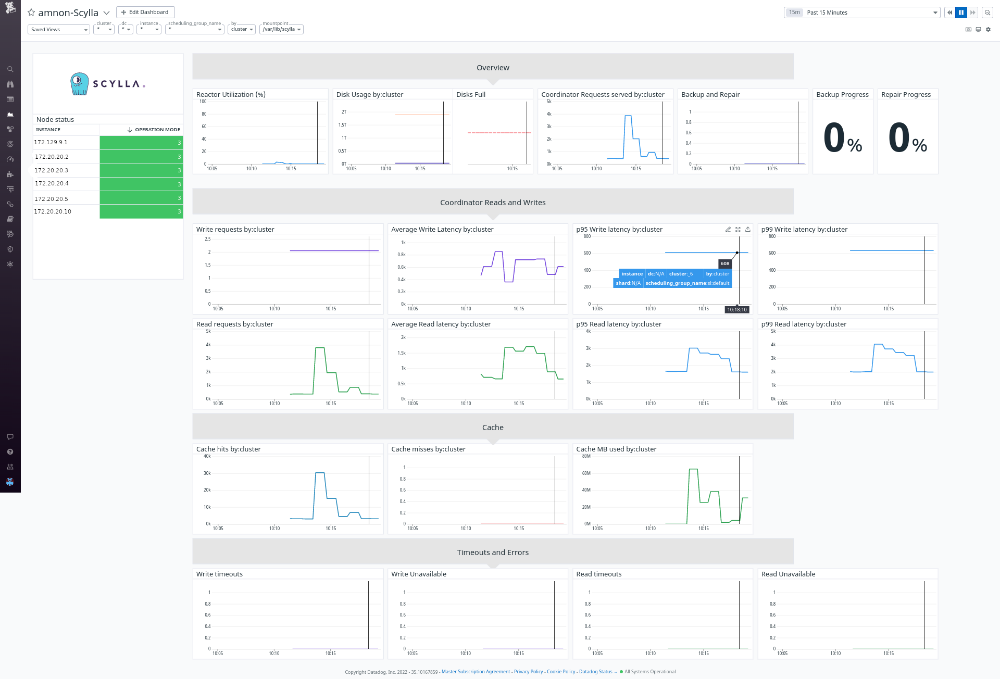

Was this page helpful?
Caution
You're viewing documentation for a previous version of ScyllaDB Monitoring. Switch to the latest stable version.
Scylla Monitoring Datadog Integration¶
The safest way to use Datadog with Scylla is to load the metrics, using a Datadog Agent, from a Prometheus server and not directly from Scylla nodes. The integration consists of:
Installing and configuring the Datadog Agent.
Add Datadog recording rules.
Loading Scylla dashboard to Datadog.
Optionally load Monitor (Alerts).
Note
Scylla Cloud users, Check the cloud users specific guide.
Scylla Monitoring Datadog Integration Overview¶
A typical ScyllaDB cluster generates thousands of metrics, sometimes even tens of thousands. The sheer number of metrics is too much for Datadog.
Instead of letting the Datadog agent scrap all metrics, the monitoring stack marks a small subset of metrics with a label and lets the Datadog agent scrap only those. That labeling is done in two places: recording rules and the Prometheus relabel config.
Recording rules aggregate the metrics so that they will be reported per instance instead of per shard, and they mark the result with a label.
Prometheus relabel config marks metrics that are reported per instance, like disk and CPU.
Install And configure the Datadog Agent¶
Start by following Installation guide. The datadog agent should run on a machine that can reach the Prometheus server.
Once the Datadog agent is working, download the configuration file and place it under /etc/datadog-agent/conf.d/prometheus.d/conf.yaml
Download the configuration file conf.yaml and replace the ip address of the Prometheus server.
Post configuration¶
Restart the agent based on your installation. Scylla metrics should be visible in Datadog.
Note
By default, Datadog will not scrap per-shard metrics. To enable per-shard metrics, edit the conf.yaml file and replace dd=~”1” with dd=~”1|2”
Add datadog recording rules¶
Download the rules configuration file datadog.rules.yml if you need per-shard metrics, download datadog.rules-with-shards.yml and place it under prometheus/prom_rules/.
Per-shards metrics adds load and cost to both the Prometheus server and Datadog agent and server, so only use it if needed.
Upload the Dashboard¶
Download the dashboard file dashboard.json.
Create a new dashboard in Datadog and import the json file you downloaded.
Using the Dashboard¶
We created a Datadog dashboard that resembles the Grafana dashboards available to Scylla and Scylla-Cloud users.
The dashboard contains some specific filtering and perspectives: First, you can choose between shard, instance, dc, or cluster view. This will aggregate the metrics in the graphs accordingly. Second, you can filter to see specific shards, nodes, or DCs.
Note
Pay attention that some of the combinations are conflicting. For example, you cannot filter by DC when looking at a cluster view. If no data displayed, remove the filters first.
Adding Monitor¶
Alerts in Datadog called Monitor. Download the monitor file monitor.json. Go to the Monitor section in datadog and import the json.
Adding more metrics to Datadog¶
To add a missing metric, do the following:
For ScyllaDB metrics, add a recording rule to report an aggregated per instance of that metric. We suggest placing it in a different YAML file to simplify an upgrade.
OS-related metrics originate from node_exporter, and Prometheus labels them during scraping. To label a node exporter metrics, edit the prometheus/prometheus.yml.template search for the job_name: node_exporter and find the metric_relabel_configs. You can add a metric name to the regex section.
If you think that metric is helpful for other users, open an issue, and we’ll add it.